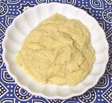

While more Sesamum species are native to Africa, domestication and harvesting of sesame seed probably first occurred in India or Persia. Both seeds and oils pressed from the seeds are widely used throughout the world, including the seeds use on baked goods in the US and Europe.
Not much sesame seed is grown in the US because harvesting it is labor intensive. Some varieties have been developed that are mechanically harvestable and these are grown mostly in Texas where the climate is suitable for those varieties. Burma, India and China are the leading producers.
The photo specimens are White (left), Black (right) and freshly dry pan roasted white seeds (center). While raw sesame seeds have a mild seed flavor and just a touch of bitterness, roasting lightly takes away the bitterness and makes them sweet with a distinct nutty flavor, highly desirable as a garnish for salads and the like.
More on Lamiales.
Store sesame seeds in a tightly sealed jar away from light and heat. Rancidity is easily detected by smell and taste by anyone who has encountered bad peanuts. Some products of rancidity are suspected of being carcinogenic so consumption of rancid seeds and oils should be avoided.
Subst: Toasted sesame seeds can be sometimes be substituted by a bit of dark sesame oil but otherwise there's no satisfactory substitute. Fortunately sesame seeds are now easily available so substitution isn't much of an issue.
Sesame Oil is generally unrefined and used mostly as a finishing oil rather than as a cooking oil, though in the past it was much used as a frying oil in some parts of India, now replaced by peanut oil which is better for the purpose.
Dark Sesame is most commonly associated with China, Japan and Korea, but is also used throughout Southeast Asia - and now worldwide. It is easily available in practically any market or supermarket that sells cooking oils, particularly the Japanese Kadoya brand. Asian markets will likely have a dozen different brands with somewhat different characteristics. "Sesame Oil" outside Southeast Asia generally presumes dark.
There are two varieties of Sesame Paste, Middle Eastern Tahini and Asian Paste. Tahini is made by grinding hulled sesame seeds very lightly roasted (no color). Asian sesame paste is made from unhulled seeds very lightly toasted and has a more bitter flavor. Tahini can pass in Asian recipes but it doesn't work the other way around.
Tahini is a very important ingredient in the Middle East and North Africa, used in dressings, soups, halva, hummus and many other dishes. Today it is easily available in any market serving a Middle Eastern community and at least one brand in most supermarkets. It should contain only 100% sesame seeds - no other ingredients.
 Technically this is Hummus-bi-Tahini (Chick Peas and Sesame) and legend says it has been made in the Middle East since antiquity - but actual evidence points to 18th century Damascus. Regardless of its origin it is today a very important preparation in the Middle East and Turkey, used as an appetizer and as an ingredient in many recipes.
The exact proportions and flavoring ingredients vary widely with region
but it's generally made from chick peas (garbanzo beans), tahini (sesame
paste), lemon juice, garlic, salt and olive oil. The photo specimen was
made in Lebanon: water, dried chick peas, sesame paste, salt, citric acid.
The word "halva" derives from the Arabic for "sweet" and designates a sweet confection variously made from various ingredients. A version made from Sesame paste sweetened with honey (traditional), sugar or fructose is very popular in Southeastern Europe, Ukraine, Russia, Turkey, Caucasus, eastern Mediterranean, Iraq and Egypt.
This is a crumbly cake with a somewhat fibrous texture (more fibrous
in honey versions) and may have pistachio nuts added and other flavorings.
The photo specimen is plain, made in Turkey from "sesame paste, sugar,
emulsifier, acidity regulator, nature-identical vanillin aroma", all
listed in truly microscopic print to get in all the languages needed
for world export.